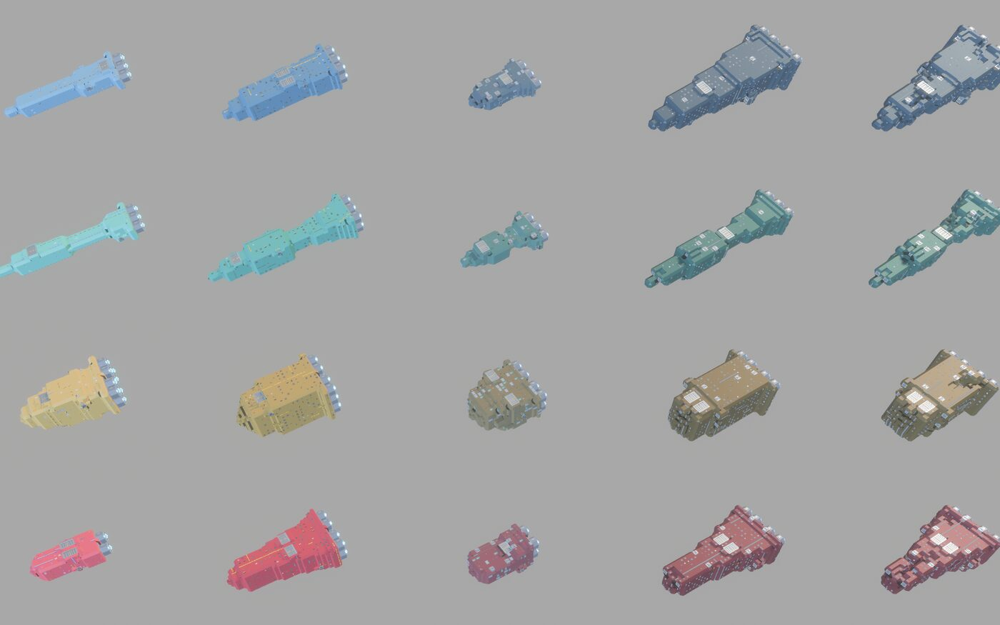
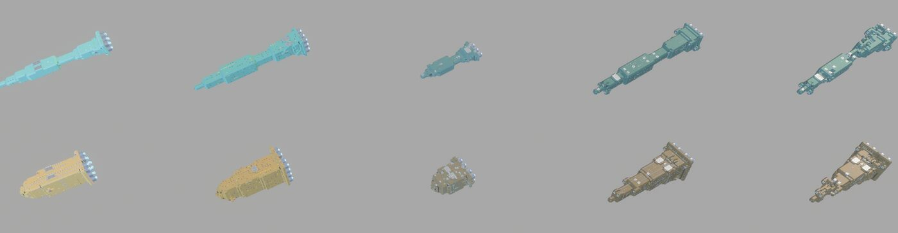
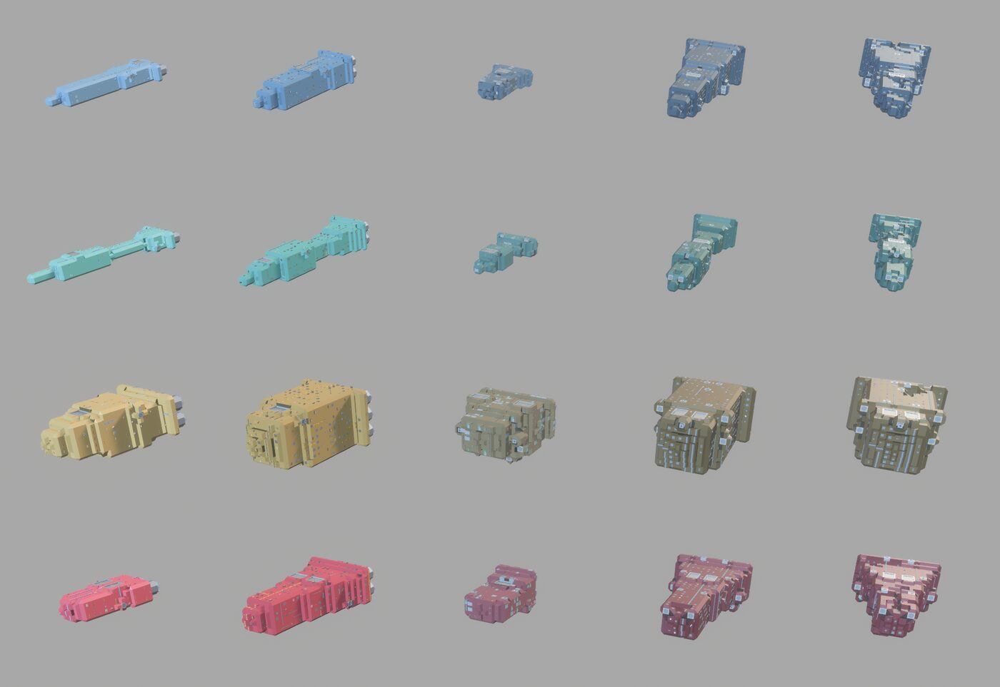

One generator, many shipyards. Each civilization draws a build doctrine once. Every hull it builds reads that doctrine inside the role's own ranges.
The owner approved every recommendation on 2026-11-23. Faction means civilization in the code. 1 engine unit = 10 m = one cell. Turn rate is the sustained rate, sqrt(LOAD_LIMIT / arm), in deg/s.
| Question | Answer | Measured |
|---|---|---|
| Can doctrines change shape and stay safe? | YES | 32 knob extremes x 4,000 hulls and 1,000 wrecks each: 0 layout fails. |
| Page doctrine sweep (200 civilizations x 4 roles x 5 advancements x 32 seeds) | 0 FAILS, BUDGET | Page doctrine: 128,000 hulls and 32,000 wrecks: 0 layout fails, 0 wreck fails, 17 hulls over 2000 sections (today 3). Redrawn 11.5% (today 11.7%). |
| Wider draw, same grid | FAIL | Wider swept draw (scale centre to 1.15, waist +-0.75): 127,999 hulls and 32,000 wrecks: 1 layout fails, 0 wreck fails, 23 hulls over 2000 sections (today 3). Redrawn 12.4% (today 11.7%). |
| Do small escort raiders survive every doctrine? | NO | A shoulder bias fails every band-0 raider. The page doctrine fails 23 of 14,400 raider hulls (band 2); today 0. No single knob is the cause. Rec: raiders read only the cube pattern. |
| Does turn rate stay in today's band? | MOSTLY | No knob leaves the role bands. Scale moves medians by up to 7 deg/s; broad and compact cut advancement-0 hulls by up to 13 (scavenger 78 to 65). Scale above 1.0 gives the slowest hulls (armored a1 median 26, today 29). |
| Does the section budget hold? | NOT TODAY EITHER | Today 3 of 128,000 hulls pass 2000 sections (largest 2063); the page doctrine 17; the wider draw 23. Plan budgets cubes plus a fitting reserve; nothing checks the total. |
| Do factions read apart? | YES | See the frames: long, stout and stubby read apart at one fixed camera. |
todayproposed range, no fault foundproposed range, cautionproposed range, fails a casetested extreme
| Knob | Verdict | Measured |
|---|---|---|
| Scale (centre +- spread) | SAFE | proposed centre 0.85..1.0, per-hull +-0.1 (today 0.8..1.2). Each step up adds hulls over 2000 sections (today 3 in 128,000). |
| Broad share | SAFE | 0 fails at 1.0. Broad hulls are shorter: turn rate up at a1, down at a0. |
| Compact share | SAFE | civilian and scavenger only (role gate kept). |
| Waist bias (cells) | CAUTION | proposed bias +-0.4, per-hull +-0.5. Shoulder +1 fails every band-0 raider (intake); safe on Advancement hulls. |
| Taper (aft blend) | CAUTION | centre 0-1, per-hull +-0.25. A full blend for every hull lifts the largest to 2045 sections. |
| Pattern weight (favoured) | SAFE | look only: identical layouts and turn rates at every extreme. |
| Drive pair share | SAFE | pairs widen the stern; L/W drops. Safe alone; part of the raider combinations. |
| Nose divisor | SAFE | nose = 1 + length / divisor. New knob, not drawn today. |
| Width bias (cells) | CAUTION | candidate only: +1 drops a0 turn rate by 10 deg/s and passes 2000 sections. |
| Height bias (cells) | CAUTION | candidate only: +1 passes 2000 sections. |
Each row is one knob. The outlined box is the value every civilization uses today. The filled bar is the range a doctrine centre may take in this proposal. Circles are the extremes the spike swept with every other knob at today's value. A knob that the sweep found unsafe at some extreme carries that colour.
Spine size, min_aspect, the ceiling and the section budget stay per role. They set berth fit, clearance and the turn-rate band, so a doctrine does not touch them.
Each extreme sets one knob (or one named combination) for every civilization, with all other draws at today's values. Grid per extreme: 50 civilizations from 8 world seeds x 4 roles x 5 advancements x 4 hull seeds = 4,000 hulls, plus 1,000 wrecks. Each cell is 200 hulls. The small line under a value is the change against today. A bar under the cell shows its size: green up, red down.
| Extreme | Layout fails | Wreck fails | Redrawn | Most sections | Largest clearance m | L/W a0.5 civ/ind/sca/arm | |
|---|---|---|---|---|---|---|---|
| today | |||||||
| today | 0 / 4000 | 0 / 1000 | 11.6% | 1956 | 339 | 2.9 / 2.9 / 1.7 / 3.3 | |
| scale | |||||||
| centre 0.7 +-0.1 | 0 / 4000 | 0 / 1000 | 10.5% | 1829 | 242 | 2.3 / 2.4 / 1.6 / 2.4 | |
| centre 0.85 +-0.1 | 0 / 4000 | 0 / 1000 | 11.1% | 1894 | 289 | 2.8 / 3.0 / 1.7 / 2.7 | |
| centre 1.15 +-0.1 | 0 / 4000 | 0 / 1000 | 13.3% | 2015 | 358 | 3.9 / 3.1 / 1.9 / 3.3 | |
| centre 1.3 +-0.1 | 0 / 4000 | 0 / 1000 | 14.3% | 1994 | 386 | 3.7 / 3.6 / 2.4 / 3.6 | |
| variant | |||||||
| all long | 0 / 4000 | 0 / 1000 | 12.7% | 1913 | 339 | 3.4 / 3.0 / 1.9 / 3.2 | |
| broad 0.5 | 0 / 4000 | 0 / 1000 | 12.9% | 1984 | 339 | 2.7 / 2.3 / 1.7 / 2.6 | |
| broad 1.0 | 0 / 4000 | 0 / 1000 | 12.1% | 1984 | 304 | 2.6 / 2.0 / 1.7 / 2.3 | |
| compact 0.5 | 0 / 4000 | 0 / 1000 | 13.8% | 1913 | 339 | 2.2 / 3.0 / 1.7 / 3.2 | |
| compact 1.0 | 0 / 4000 | 0 / 1000 | 15.4% | 1913 | 339 | 2.1 / 3.0 / 1.7 / 3.2 | |
| waist | |||||||
| waist -1 +-0.25 | 0 / 4000 | 0 / 1000 | 12.6% | 1915 | 339 | 3.1 / 3.1 / 2.0 / 3.7 | |
| shoulder +1 +-0.25 | 0 / 4000 | 0 / 1000 | 17.1% | 2035 | 349 | 2.9 / 2.6 / 1.6 / 2.6 | |
| amp 2 | 0 / 4000 | 0 / 1000 | 13.6% | 1991 | 347 | 2.9 / 2.9 / 1.8 / 3.0 | |
| shoulder +2 | 0 / 4000 | 0 / 1000 | 16.1% | 2023 | 346 | 2.3 / 2.2 / 1.4 / 2.5 | |
| taper | |||||||
| aft 0 (no blend) | 0 / 4000 | 0 / 1000 | 9.6% | 1838 | 340 | 2.9 / 3.0 / 1.7 / 3.1 | |
| aft 1 (full blend) | 0 / 4000 | 0 / 1000 | 14.4% | 2045 | 345 | 2.6 / 3.1 / 1.7 / 2.9 | |
| pattern | |||||||
| rings only, width 2 | 0 / 4000 | 0 / 1000 | 11.6% | 1956 | 339 | 2.9 / 2.9 / 1.7 / 3.3 | |
| rings only, width 4 | 0 / 4000 | 0 / 1000 | 11.6% | 1956 | 339 | 2.9 / 2.9 / 1.7 / 3.3 | |
| deck only | 0 / 4000 | 0 / 1000 | 11.6% | 1956 | 339 | 2.9 / 2.9 / 1.7 / 3.3 | |
| shell only | 0 / 4000 | 0 / 1000 | 11.6% | 1956 | 339 | 2.9 / 2.9 / 1.7 / 3.3 | |
| drive | |||||||
| pair 0 (single) | 0 / 4000 | 0 / 1000 | 10.5% | 1972 | 339 | 3.6 / 3.3 / 2.1 / 3.9 | |
| pair 1 (pairs) | 0 / 4000 | 0 / 1000 | 12.6% | 1963 | 342 | 2.6 / 2.4 / 1.7 / 2.7 | |
| nose | |||||||
| nose len/3 (long) | 0 / 4000 | 0 / 1000 | 12.4% | 1972 | 349 | 3.0 / 2.9 / 1.9 / 2.9 | |
| nose len/8 (blunt) | 0 / 4000 | 0 / 1000 | 12.8% | 1992 | 338 | 3.0 / 2.6 / 1.8 / 3.0 | |
| nose len/12 | 0 / 4000 | 0 / 1000 | 11.5% | 1987 | 339 | 2.9 / 2.7 / 1.7 / 3.0 | |
| width | |||||||
| widen +1 | 0 / 4000 | 0 / 1000 | 15.6% | 2062 | 339 | 2.8 / 2.5 / 1.7 / 2.6 | |
| widen -1 | 0 / 4000 | 0 / 1000 | 14.4% | 1955 | 339 | 3.0 / 3.4 / 2.1 / 3.8 | |
| height | |||||||
| heighten +1 | 0 / 4000 | 0 / 1000 | 11.6% | 2005 | 348 | 2.9 / 2.8 / 1.9 / 2.7 | |
| heighten -1 | 0 / 4000 | 0 / 1000 | 13.6% | 1901 | 342 | 3.1 / 3.2 / 1.9 / 3.7 | |
| combo | |||||||
| long+lean: 1.15, all long, waist -1, nose/3 | 0 / 4000 | 0 / 1000 | 15.8% | 1912 | 351 | 4.0 / 3.7 / 2.5 / 3.7 | |
| stout: 0.85, broad 0.5, shoulder +1, nose/8 | 0 / 4000 | 0 / 1000 | 13.0% | 2018 | 282 | 2.0 / 1.9 / 1.4 / 2.1 | |
| stubby: 0.85, compact 0.5, aft 1, nose/8 | 0 / 4000 | 0 / 1000 | 16.0% | 1981 | 282 | 2.0 / 2.3 / 1.7 / 2.7 | |
"Redrawn" is the share of hulls that needed more than one of the 8 attempts. It is the early warning: a rise means the knob pushes more draws into a constraint. Shoulder +1 has the most redraws (17.1%, today 11.6%).
"Most sections" counts real sections after fitting. Plan budgets cubes plus a 100-section fitting reserve (ship_layout.rs:1966), but nothing checks the total after fitting, so a large body with many fittings passes 2000. The only guard is the test generated_ships_at_full_advancement_stay_within_the_section_budget (generated_wrecks.rs:136-150), on one civilization and 32 seeds. Over 200 civilizations and 32 seeds, today already builds 3 hulls in 128,000 over 2000 (largest 2063).
Cube pattern rows are identical to today: the pattern changes which palette sits where, not the layout.
| Extreme | civilian | industrial | scavenger | armored | ||||||||
|---|---|---|---|---|---|---|---|---|---|---|---|---|
| a0 | a0.5 | a1 | a0 | a0.5 | a1 | a0 | a0.5 | a1 | a0 | a0.5 | a1 | |
| today | ||||||||||||
| today | 700 | 420 | 340 | 720 | 410 | 320 | 780 | 500 | 420 | 690 | 370 | 290 |
| scale | ||||||||||||
| centre 0.7 +-0.1 | 70+1 | 48+6 | 39+5 | 72+1 | 47+6 | 37+5 | 79+1 | 55+4 | 48+6 | 690 | 43+6 | 34+5 |
| centre 0.85 +-0.1 | 70+1 | 44+2 | 35+2 | 72+1 | 42+2 | 34+2 | 79+1 | 53+2 | 45+3 | 690 | 40+3 | 30+2 |
| centre 1.15 +-0.1 | 67-3 | 38-4 | 30-4 | 68-3 | 37-4 | 28-3 | 75-3 | 48-2 | 38-4 | 64-4 | 34-3 | 26-3 |
| centre 1.3 +-0.1 | 63-7 | 35-6 | 28-6 | 64-7 | 35-6 | 26-5 | 73-5 | 45-5 | 36-6 | 62-7 | 32-5 | 24-5 |
| variant | ||||||||||||
| all long | 71+1 | 40-2 | 33-1 | 720 | 400 | 310 | 80+2 | 500 | 41-1 | 690 | 370 | 280 |
| broad 0.5 | 65-4 | 43+2 | 340 | 68-4 | 43+2 | 320 | 66-12 | 51+1 | 43+1 | 67-2 | 39+1 | 30+2 |
| broad 1.0 | 62-7 | 45+3 | 36+3 | 64-8 | 45+4 | 34+2 | 65-13 | 53+2 | 45+3 | 64-4 | 41+4 | 31+2 |
| compact 0.5 | 65-4 | 47+5 | 36+2 | 720 | 400 | 310 | 77-1 | 510 | 45+3 | 690 | 370 | 280 |
| compact 1.0 | 60-9 | 49+8 | 40+6 | 720 | 400 | 310 | 65-13 | 52+1 | 49+7 | 690 | 370 | 280 |
| waist | ||||||||||||
| waist -1 +-0.25 | 70+1 | 43+1 | 340 | 710 | 400 | 320 | 79+1 | 50-1 | 420 | 680 | 370 | 30+1 |
| shoulder +1 +-0.25 | 70+1 | 420 | 330 | 710 | 400 | 31-1 | 780 | 51+1 | 420 | 68-1 | 380 | 280 |
| amp 2 | 690 | 420 | 330 | 710 | 410 | 310 | 77-1 | 510 | 420 | 68-1 | 38+1 | 290 |
| shoulder +2 | 700 | 420 | 330 | 70-2 | 410 | 30-1 | 79+1 | 510 | 420 | 70+1 | 370 | 280 |
| taper | ||||||||||||
| aft 0 (no blend) | 700 | 420 | 34+1 | 710 | 400 | 32+1 | 780 | 500 | 43+1 | 680 | 380 | 30+1 |
| aft 1 (full blend) | 700 | 410 | 32-1 | 710 | 40-1 | 310 | 780 | 500 | 420 | 68-1 | 370 | 28-1 |
| pattern | ||||||||||||
| rings only, width 2 | 700 | 420 | 340 | 720 | 410 | 320 | 780 | 500 | 420 | 690 | 370 | 290 |
| rings only, width 4 | 700 | 420 | 340 | 720 | 410 | 320 | 780 | 500 | 420 | 690 | 370 | 290 |
| deck only | 700 | 420 | 340 | 720 | 410 | 320 | 780 | 500 | 420 | 690 | 370 | 290 |
| shell only | 700 | 420 | 340 | 720 | 410 | 320 | 780 | 500 | 420 | 690 | 370 | 290 |
| drive | ||||||||||||
| pair 0 (single) | 70+1 | 42+1 | 34+1 | 72+1 | 41+1 | 320 | 780 | 52+1 | 43+1 | 69+1 | 38+1 | 290 |
| pair 1 (pairs) | 700 | 410 | 330 | 710 | 400 | 31-1 | 780 | 50-1 | 41-1 | 680 | 370 | 290 |
| nose | ||||||||||||
| nose len/3 (long) | 690 | 41-1 | 330 | 70-1 | 40-1 | 310 | 780 | 49-1 | 420 | 67-2 | 36-1 | 280 |
| nose len/8 (blunt) | 70+1 | 43+1 | 330 | 720 | 41+1 | 320 | 780 | 510 | 43+1 | 690 | 38+1 | 29+1 |
| nose len/12 | 700 | 43+1 | 340 | 710 | 410 | 320 | 780 | 510 | 44+2 | 680 | 38+1 | 29+1 |
| width | ||||||||||||
| widen +1 | 60-9 | 42+1 | 340 | 62-9 | 410 | 320 | 65-13 | 49-2 | 43+1 | 62-6 | 38+1 | 290 |
| widen -1 | 71+1 | 420 | 33-1 | 720 | 40-1 | 31-1 | 80+2 | 51+1 | 42-1 | 690 | 370 | 290 |
| height | ||||||||||||
| heighten +1 | 71+2 | 43+1 | 340 | 710 | 410 | 320 | 79+1 | 52+1 | 43+1 | 68-1 | 38+1 | 290 |
| heighten -1 | 700 | 40-1 | 32-2 | 70-1 | 39-1 | 310 | 780 | 48-2 | 40-2 | 67-2 | 370 | 290 |
| combo | ||||||||||||
| long+lean: 1.15, all long, waist -1, nose/3 | 67-2 | 37-5 | 29-5 | 69-3 | 36-4 | 28-3 | 780 | 46-5 | 37-5 | 67-2 | 34-4 | 26-3 |
| stout: 0.85, broad 0.5, shoulder +1, nose/8 | 700 | 45+4 | 37+4 | 710 | 45+5 | 35+3 | 68-10 | 53+2 | 46+4 | 68-1 | 42+5 | 32+3 |
| stubby: 0.85, compact 0.5, aft 1, nose/8 | 66-3 | 50+8 | 39+6 | 720 | 43+2 | 33+2 | 66-12 | 52+2 | 48+6 | 680 | 40+2 | 30+1 |
Median sustained turn rate in deg/s at advancement 0, 0.5 and 1. The small line is the change against today. Green: 6 deg/s faster or more. Red: 6 deg/s slower or more. Amber: 3 to 6 slower.
Every hull in every sweep was structure-bound (load limit), none torque-bound, so turn rate follows the mass layout's arm only. Broad and compact hulls turn slower at advancement 0 (the extra width is a larger share of a small hull) and faster at 1 (shorter). Scale moves every role in one direction: 0.7 gives +6 at a0.5, 1.3 gives -7.
| Doctrine | Layout fails | Sections min / med / max | Turn med deg/s | Turn min | |
|---|---|---|---|---|---|
| band 0 | |||||
| today | 0 / 600 | 22 / 32 / 36 | 750 | 62 | |
| scale 0.85 | 0 / 600 | 22 / 27 / 36 | 79+4 | 66 | |
| scale 1.15 | 0 / 600 | 22 / 32 / 36 | 740 | 62 | |
| broad 0.5 | 0 / 600 | 22 / 27 / 36 | 77+2 | 63 | |
| compact 0.5 | 0 / 600 | 22 / 28 / 35 | 740 | 63 | |
| all long | 0 / 600 | 22 / 32 / 36 | 76+1 | 63 | |
| shoulder +1 | 600 / 600 | - | - | - | |
| waist -1 | 0 / 600 | 22 / 28 / 36 | 72-2 | 63 | |
| nose/3 | 0 / 600 | 20 / 26 / 36 | 74-1 | 63 | |
| nose/8 | 0 / 600 | 22 / 28 / 36 | 76+1 | 64 | |
| wider draw | 1 / 600 | 20 / 28 / 36 | 74-1 | 62 | |
| band 1 | |||||
| today | 0 / 600 | 29 / 51 / 64 | 590 | 47 | |
| scale 0.85 | 0 / 600 | 29 / 44 / 64 | 62+3 | 50 | |
| scale 1.15 | 0 / 600 | 37 / 56 / 64 | 57-2 | 47 | |
| broad 0.5 | 0 / 600 | 29 / 52 / 64 | 60+1 | 47 | |
| compact 0.5 | 0 / 600 | 29 / 53 / 64 | 60+1 | 47 | |
| all long | 0 / 600 | 29 / 53 / 68 | 58-1 | 47 | |
| shoulder +1 | 0 / 600 | 50 / 58 / 68 | 70+11 | 66 | |
| waist -1 | 0 / 600 | 29 / 44 / 63 | 58-1 | 46 | |
| nose/3 | 0 / 600 | 30 / 50 / 67 | 58-2 | 47 | |
| nose/8 | 0 / 600 | 29 / 54 / 68 | 61+2 | 47 | |
| wider draw | 0 / 600 | 28 / 52 / 69 | 60+1 | 47 | |
| band 2 | |||||
| today | 0 / 600 | 48 / 93 / 111 | 480 | 38 | |
| scale 0.85 | 0 / 600 | 48 / 89 / 107 | 50+2 | 41 | |
| scale 1.15 | 0 / 600 | 57 / 96 / 111 | 46-2 | 37 | |
| broad 0.5 | 0 / 600 | 48 / 91 / 111 | 49+1 | 39 | |
| compact 0.5 | 0 / 600 | 48 / 96 / 111 | 50+2 | 39 | |
| all long | 0 / 600 | 48 / 93 / 111 | 47-1 | 38 | |
| shoulder +1 | 0 / 600 | 69 / 101 / 111 | 56+8 | 50 | |
| waist -1 | 0 / 600 | 54 / 88 / 110 | 45-3 | 37 | |
| nose/3 | 0 / 600 | 52 / 91 / 110 | 46-2 | 37 | |
| nose/8 | 0 / 600 | 46 / 91 / 110 | 49+1 | 39 | |
| wider draw | 5 / 600 | 46 / 93 / 111 | 49+1 | 38 | |
| Band | Doctrine | Layout fails | Redrawn | Sections min / max | Turn med | Constraint |
|---|---|---|---|---|---|---|
| band 0 | today | 0 / 4800 | 22.5% | 22 / 36 | 75 | - |
| band 0 | wider draw | 3 / 4800 | 24.3% | 20 / 36 | 74 | no eligible cargo intake part fits the layout: 3 |
| band 0 | wider draw, waist +-0.4 | 0 / 4800 | 19.5% | 20 / 36 | 73 | - |
| band 1 | today | 0 / 4800 | 18.2% | 29 / 64 | 58 | - |
| band 1 | wider draw | 0 / 4800 | 15.8% | 27 / 70 | 60 | - |
| band 1 | wider draw, waist +-0.4 | 0 / 4800 | 16.4% | 27 / 69 | 59 | - |
| band 2 | today | 0 / 4800 | 26.0% | 47 / 111 | 49 | - |
| band 2 | wider draw | 22 / 4800 | 27.3% | 46 / 111 | 49 | no eligible cargo intake part fits the layout: 22 |
| band 2 | wider draw, waist +-0.4 | 23 / 4800 | 27.1% | 46 / 111 | 48 | intake 'intake' reaches as far out as a docking port's face, where a berthed hull parks: 1, no eligible cargo intake part fits the layout: 22 |
| Doctrine variant | Layout fails | Constraint |
|---|---|---|
| band 0 | ||
| today | 0 / 4800 | reference |
| wider draw | 3 / 4800 | reference |
| page doctrine | 0 / 4800 | - |
| wider draw, scale today | 3 / 4800 | no eligible cargo intake part fits the layout: 3 |
| wider draw, shares today | 5 / 4800 | no eligible cargo intake part fits the layout: 5 |
| wider draw, waist today | 0 / 4800 | - |
| wider draw, taper today | 3 / 4800 | no eligible cargo intake part fits the layout: 3 |
| wider draw, pair today | 0 / 4800 | - |
| wider draw, nose today | 0 / 4800 | - |
| wider draw, pattern today | 3 / 4800 | no eligible cargo intake part fits the layout: 3 |
| wider draw, scale >= 0.95 | 3 / 4800 | no eligible cargo intake part fits the layout: 3 |
| today, pair 0 | 0 / 4800 | - |
| today, pair 1 | 0 / 4800 | - |
| wider draw, pair 0.3..0.7 | 3 / 4800 | no eligible cargo intake part fits the layout: 3 |
| page doctrine, pair 0.3..0.7 | 0 / 4800 | - |
| page doctrine, pair 0.5 (today) | 0 / 4800 | - |
| band 1 | ||
| today | 0 / 4800 | reference |
| wider draw | 0 / 4800 | reference |
| page doctrine | 0 / 4800 | - |
| today, pair 0 | 0 / 4800 | - |
| today, pair 1 | 0 / 4800 | - |
| wider draw, pair 0.3..0.7 | 0 / 4800 | - |
| page doctrine, pair 0.3..0.7 | 0 / 4800 | - |
| page doctrine, pair 0.5 (today) | 0 / 4800 | - |
| band 2 | ||
| today | 0 / 4800 | reference |
| wider draw | 22 / 4800 | reference |
| page doctrine | 23 / 4800 | intake 'intake' reaches as far out as a docking port's face, where a berthed hull parks: 1, no eligible cargo intake part fits the layout: 22 |
| wider draw, scale today | 25 / 4800 | intake 'intake' reaches as far out as a docking port's face, where a berthed hull parks: 1, no eligible cargo intake part fits the layout: 24 |
| wider draw, shares today | 22 / 4800 | intake 'intake' reaches as far out as a docking port's face, where a berthed hull parks: 1, no eligible cargo intake part fits the layout: 21 |
| wider draw, waist today | 7 / 4800 | intake 'intake' reaches as far out as a docking port's face, where a berthed hull parks: 1, no eligible cargo intake part fits the layout: 6 |
| wider draw, taper today | 8 / 4800 | no eligible cargo intake part fits the layout: 8 |
| wider draw, pair today | 0 / 4800 | - |
| wider draw, nose today | 25 / 4800 | no eligible cargo intake part fits the layout: 25 |
| wider draw, pattern today | 22 / 4800 | no eligible cargo intake part fits the layout: 22 |
| wider draw, scale >= 0.95 | 23 / 4800 | intake 'intake' reaches as far out as a docking port's face, where a berthed hull parks: 1, no eligible cargo intake part fits the layout: 22 |
| today, pair 0 | 0 / 4800 | - |
| today, pair 1 | 0 / 4800 | - |
| wider draw, pair 0.3..0.7 | 13 / 4800 | no eligible cargo intake part fits the layout: 13 |
| page doctrine, pair 0.3..0.7 | 11 / 4800 | intake 'intake' reaches as far out as a docking port's face, where a berthed hull parks: 1, no eligible cargo intake part fits the layout: 10 |
| page doctrine, pair 0.5 (today) | 1 / 4800 | intake 'intake' reaches as far out as a docking port's face, where a berthed hull parks: 1 |
Escort raiders use ShipSizeType::Budget: 40 sections and 1 turret below advancement 0.25, 68/2 from 0.25, 108/3 from 0.5, and full Advancement size from 0.75 (nova_gameplay/src/jobs.rs:199-227). The budget is tight, so a body that gives up width in the middle has no place left for a cargo intake.
A failed raider is loud. A job raider panics in spawn_job_bodies (nova_world_base/src/jobs.rs:960). An ambush encounter is refused with a warning (encounters.rs:450-455).
Turn rate of the raiders stays in today's band for every doctrine that builds (band 0: 72 to 79 deg/s median vs 75 today), so the fight balance does not move.
Page doctrine: 128,000 hulls and 32,000 wrecks: 0 layout fails, 0 wreck fails, 17 hulls over 2000 sections (today 3). Redrawn 11.5% (today 11.7%).
Wider swept draw (scale centre to 1.15, waist +-0.75): 127,999 hulls and 32,000 wrecks: 1 layout fails, 0 wreck fails, 23 hulls over 2000 sections (today 3). Redrawn 12.4% (today 11.7%).
200 civilizations drew a doctrine. Of 424 neighbour pairs (same world, one node apart), 10 (2.4%) look alike on scale, shares, waist and nose together.
| Role | Adv | Hulls | Turn med deg/s (vs today) | Turn min today / doctrine | Clearance max m | L/W p10-p90 | Most sections |
|---|---|---|---|---|---|---|---|
| civilian | 0.00 | 6400 | 700 | 58 / 56 | 75 / 75 | 1.8-2.4 / 1.8-2.4 | 113 / 119 |
| civilian | 0.25 | 6400 | 54+2 | 42 / 43 | 115 / 108 | 2.0-3.8 / 2.0-3.4 | 301 / 310 |
| civilian | 0.50 | 6400 | 43+2 | 34 / 35 | 170 / 163 | 2.0-5.2 / 1.8-4.8 | 770 / 846 |
| civilian | 0.75 | 6400 | 37+2 | 30 / 31 | 215 / 206 | 2.5-6.8 / 2.3-6.2 | 1101 / 1389 |
| civilian | 1.00 | 6400 | 34+1 | 27 / 28 | 263 / 246 | 2.7-6.1 / 2.5-5.6 | 1905 / 1917 |
| industrial | 0.00 | 6400 | 71+1 | 58 / 56 | 74 / 75 | 1.6-2.0 / 1.8-2.2 | 170 / 173 |
| industrial | 0.25 | 6400 | 52+2 | 41 / 42 | 126 / 121 | 2.1-4.0 / 2.0-3.6 | 550 / 514 |
| industrial | 0.50 | 6400 | 41+1 | 34 / 36 | 187 / 176 | 2.0-4.1 / 1.9-3.7 | 1692 / 1837 |
| industrial | 0.75 | 6400 | 36+1 | 29 / 30 | 241 / 225 | 2.5-5.4 / 2.4-5.0 | 1916 / 1994 |
| industrial | 1.00 | 6400 | 32+1 | 25 / 26 | 290 / 273 | 3.0-6.7 / 2.7-6.1 | 1997 / 2015 |
| scavenger | 0.00 | 6400 | 790 | 61 / 56 | 75 / 78 | 1.4-1.6 / 1.4-1.6 | 165 / 171 |
| scavenger | 0.25 | 6400 | 64+2 | 48 / 49 | 91 / 91 | 1.6-2.6 / 1.6-2.3 | 206 / 195 |
| scavenger | 0.50 | 6400 | 52+1 | 41 / 41 | 130 / 126 | 1.4-2.6 / 1.4-2.3 | 594 / 642 |
| scavenger | 0.75 | 6400 | 47+2 | 37 / 37 | 156 / 148 | 1.6-3.3 / 1.5-2.9 | 775 / 794 |
| scavenger | 1.00 | 6400 | 43+2 | 34 / 34 | 181 / 172 | 1.8-4.0 / 1.7-3.6 | 1004 / 1183 |
| armored | 0.00 | 6400 | 680 | 56 / 56 | 74 / 83 | 1.4-2.3 / 1.6-2.3 | 172 / 175 |
| armored | 0.25 | 6400 | 48+2 | 39 / 40 | 147 / 135 | 2.3-4.6 / 2.1-4.0 | 631 / 653 |
| armored | 0.50 | 6400 | 38+1 | 30 / 32 | 221 / 209 | 2.1-4.6 / 2.1-4.3 | 1911 / 1908 |
| armored | 0.75 | 6400 | 33+1 | 26 / 27 | 289 / 263 | 2.7-6.1 / 2.5-5.7 | 1992 / 2043 |
| armored | 1.00 | 6400 | 29+1 | 22 / 24 | 353 / 321 | 3.2-6.6 / 3.0-6.9 | 2063 / 2056 |
The page doctrine is the BuildDoctrine draw on this page: scale centre 0.85..1.0 (+-0.1 per hull), broad 0..0.4, compact 0..0.4, waist bias +-0.4 (+-0.5 per hull), taper centre 0..1 (+-0.25), favoured pattern 0.7, ring width 2..4, drive pair 0.1..0.9, nose 3..8. The wider draw (scale centre to 1.15, waist +-0.75) ran first; its results set the narrower ranges.
The table compares today with the page doctrine per role and advancement: 6,400 hulls per row. "Look alike": two neighbours within a quarter of the range on every shape knob at once (scale 0.0375, broad and compact 0.1, waist 0.2, nose 1). Neighbours are lattice nodes one step apart in one world.



Spike patch on examples/playable/faction_palettes.rs (reverted): NOVA_DOCTRINE_SPIKE picks a preset, one palette per row, fixed yaw, pitch 48 deg and reach 125 u (84 deg and 215 u at 1.0). Under xvfb with lavapipe, sandboxed profile. Every run passed its smoke step.
| Knob | Today | Evidence | Moves | Doctrine |
|---|---|---|---|---|
| Attempts | MAX_LAYOUT_ATTEMPTS = 8; attempt loop; a fresh stream per attempt | ship_layout.rs:93, :512, :890 | Every knob: a redraw costs an attempt; 8 misses fail the request | LIMIT |
| Sector failure | A failed layout fails the whole sector | sector_ships.rs:33-35, :258 | Layout failure | FAILS LOUD |
| Job raider failure | A job raider that fails to lay out panics; an encounter ambush is refused (warn) | jobs.rs:960; encounters.rs:450-455, :546 | Layout failure | FAILS LOUD |
| Spine size per role | role_shape spine ranges, lerped by advancement | ship_layout.rs:1176-1185, :1913 | Clearance, sections, turn rate | KEEP PER ROLE |
| min_aspect | per role, 2.0 to 3.0; plan lengthens until met | ship_layout.rs:1176-1185, :1967 | Turn rate, clearance | KEEP PER ROLE |
| Ceiling | ceiling(advancement), 100 m to 400 m | ship_layout.rs:97, :101, :863, :1936 | Clearance, berth fit | KEEP PER ROLE |
| Section budget | plan budgets cubes + 100 fitting reserve; not checked after fitting | ship_layout.rs:113, :119, :125, :1966 | Sections (test asserts <= 2000) | KEEP PER ROLE |
| Shrink order | over budget: width, then height, then length | ship_layout.rs:1971 | Turns scale near the ceiling into narrower hulls | KEEP PER ROLE |
| Scale | 0.8 + 0.4 * unit, multiplies length | ship_layout.rs:1916 | Length, sections, clearance, turn rate | DOCTRINE |
| Long / broad / compact | one unit draw: long below 0.7, compact 0.7-0.85 (roles that allow), broad above 0.85 | ship_layout.rs:1919-1930 | Length and width; turn rate | DOCTRINE |
| Waist / shoulder | middle = [signed, signed], up to 1 cell at mid-body | ship_layout.rs:1933, :2014 | Width at middle; small-budget intake fit | DOCTRINE |
| Taper / flare | aft = [unit, unit], blend toward the stern size | ship_layout.rs:1934, :2015 | Body width aft; sections | DOCTRINE |
| Nose | 1 + length / 5, fixed (not drawn) | ship_layout.rs:1253 | Pointed or blunt bow | NEW KNOB |
| Cube pattern | rings (width 2-4) / deck / shell at 0.4 / 0.3 / 0.3 | ship_layout.rs:1270-1274, :1614 | Look only | DOCTRINE |
| Drive layout | single or mirrored pair, 50/50 where both fit | ship_layout.rs:1555, :1571 | Stern width | DOCTRINE |
| Turn rate | sqrt(LOAD_LIMIT / arm), LOAD_LIMIT = 8 g; arm from the hull's mass layout | attitude.rs:111, :157; scale.rs:17 | Read-out, not gated | MEASURED |
| Berth fit | runtime pose search; a hull that fits no free port is not parked (warn) | hull_buy.rs:258; parked_hulls.rs:34-37 | Not measured; clearance is the proxy | MEASURED |
Owner: nova_world_base::ship_layout. Entry: generate_ship(snapshot, ShipLayoutRequest) (ship_layout.rs:462). Inputs: the request's seed, civilization, role, advancement, size and spare drive (:178). It is greedy placement, not WFC: plan a body, mount parts, check, and redraw on any constraint, up to 8 times. Output: a ship design that rides in the save. The editor's WFC collapse does not use this path.
/// How one civilization builds hulls: proportion habits the hull generator
/// reads inside each role's spine, aspect and ceiling. Drawn once per
/// civilization; every hull of every role reads the same doctrine.
#[derive(Clone, Copy, Debug, PartialEq)]
pub struct BuildDoctrine {
/// Centre of the per-hull scale draw, 0.85..=1.0; each hull draws
/// within +-0.1 of it (today 0.8..1.2 for everyone).
pub scale: f32,
/// Share of broad hulls, 0.0..=0.4 (today 0.15).
pub broad: f32,
/// Share of compact hulls on roles that allow them, 0.0..=0.4
/// (today 0.15). Roles without compact hulls build long ones instead.
pub compact: f32,
/// Mid-body bias in cells: negative a waist, positive a shoulder,
/// -0.4..=0.4; each hull adds +-0.5 (today 0 +- 1).
pub waist: f32,
/// Centre of the stern blend, 0.0..=1.0; each hull draws +-0.25
/// around it (today 0..1).
pub taper: f32,
/// The cube pattern this civilization favours, drawn at 0.7 (the
/// other two at 0.15 each).
pub pattern: CubePatternType,
/// Ring width when a hull draws rings, 2..=4.
pub ring_width: i32,
/// Share of mirrored drive pairs where a single drive also fits,
/// 0.1..=0.9 (today 0.5).
pub drive_pair: f32,
/// Nose divisor: the nose takes 1 + length / nose stations, 3..=8
/// (today 5). Low is a long pointed bow, high a blunt one.
pub nose: i32,
}
/// The second palette cube's layout over the spine.
#[derive(Clone, Copy, Debug, PartialEq, Eq)]
pub enum CubePatternType { Rings, Deck, Shell }
impl BuildDoctrine {
/// The doctrine `id` builds with, from its own seeded stream.
pub fn of(id: CivilizationId) -> Self {
let mut stream = id.stream(b"doctrine");
Self {
scale: 0.85 + 0.15 * stream.unit(),
broad: 0.4 * stream.unit(),
compact: 0.4 * stream.unit(),
waist: 0.4 * stream.signed(),
taper: stream.unit(),
pattern: [Rings, Deck, Shell][(stream.unit() * 3.0) as usize % 3],
ring_width: 2 + (stream.unit() * 3.0) as i32 % 3,
drive_pair: 0.1 + 0.8 * stream.unit(),
nose: 3 + (stream.unit() * 6.0) as i32 % 6,
}
}
}sector_ships.rs:258 ----------------+
station_hulls.rs:71 ----------------+
jobs.rs:1140 derelict / :1185 job --+--> generate_ship(snapshot, request) ship_layout.rs:462
encounters.rs:546 (via job_hull) ---+ attempt loop :512, stream(request, attempt, aspect) :890
tests, examples --------------------+ Draw::layout :1505
+-- drive :1555 pair 0.5 :1571
+-- pattern :1614 0.4 / 0.3 / 0.3 :1274
+-- plan :1904 scale :1916, variant :1919,
| middle :1933, aft :1934
+-- stations :1991 nose 1 + len/5 :1253(callers unchanged; the request already names its civilization)
generate_ship(snapshot, request)
doctrine = BuildDoctrine::of(request.civilization) <- id.stream(b"doctrine")
Draw { doctrine, .. }
+-- drive unit() < doctrine.drive_pair
+-- pattern CubePatternType weights from doctrine.pattern, rings doctrine.ring_width
+-- plan scale = doctrine.scale + 0.1 * signed()
variant cut points from doctrine.broad / doctrine.compact
middle = doctrine.waist + 0.5 * signed(), aft = doctrine.taper +- 0.25
(spine, min_aspect, ceiling, budget, shrink order: per role, unchanged)
+-- stations(.., doctrine.nose)
generate_wreck :541 ruins generate_ship's hull, so wrecks read as their civilization's shipsnova_world_base (new build_doctrine.rs, exported through the crate prelude). It is the lowest crate that reads it: the generator and its callers are there; CivilizationId::stream is in nova_gameplay below it.Civilization, no request field, no content kind, no save change. Like lawful (civilizations.rs:280) and the station archetype (station_layout.rs:398-400).0.8 + 0.4u scale, the fixed 0.7/0.85 cut points, the fixed 0.5 drive pair, the fixed 0.4/0.3/0.3 pattern odds and 1 + len/5.generated_armament.rs (20..=40 sections in band 0) and generated_wrecks.rs:136-150 (<= 2000) now run under civilization {3, [0,0,0]}'s doctrine.// Only if the owner picks the authored catalog (decision 1, option B).
// assets/base/doctrines/*.content.ron, generated from a Rust builder.
Doctrine((
id: "long_haul", // BuildDoctrineDesignId
scale: 0.95,
broad: 0.1,
compact: 0.0,
waist: -0.3,
taper: 0.8,
pattern: Rings, // CubePatternType
ring_width: 3,
drive_pair: 0.2,
nose: 3,
))BuildDoctrine::of(id) from id.stream(b"doctrine"). No content, no lint, no save change. Mods cannot pick one.Doctrine content kind with BuildDoctrineDesignId, picked by lattice like palettes. Mods add doctrines; needs a builder, lint for ranges, and generated RON.generate_ship calls BuildDoctrine::of(request.civilization). No caller changes.check rejects a design over MAX_SHIP_SECTIONS and redraws. 0 over budget; fixes today's 3 too. One more redraw cause, on 17 of 128,000 hulls (page doctrine).faction_doctrines: the faction_palettes row with a civilization stepper.station_hulls.rs:71) and job hulls go through the same path; only sector-style requests and raider budgets were swept.SPIKE A thread-local doctrine override in ship_layout.rs (unset = today's draws, byte for byte), a disposable test crates/nova_authoring/tests/doctrine_spike.rs, and a frame patch on the faction_palettes example. All reverted or deleted. Civilizations: 8 world seeds x 5x5 lattice nodes. Request seed seed * 2654435761 ^ node[0]. Wrecks on every fourth seed. Turn rate from hull_mass_properties and AttitudeEnvelope, the same arithmetic as the editor read-out.